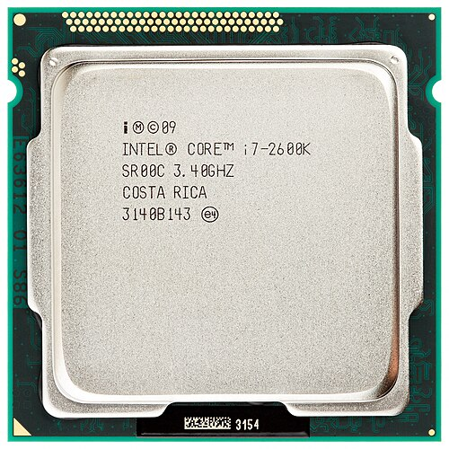
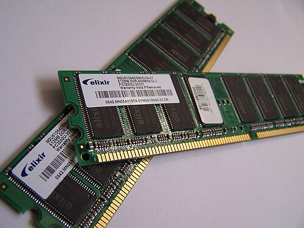
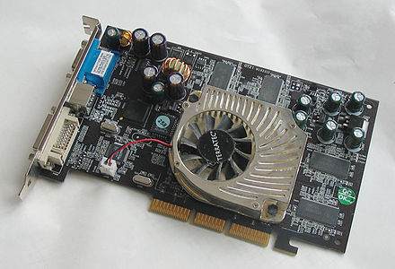

CPU
ცენტრალური პროცესორი ასევე ცენტრალური გამომთვლელი ერთეული
ელექტრონული სქემა, ან ინტეგრირებული მიკროსქემა (მიკროპროცესორი), რომელიც ასრულებს სამანქანო ინსტრუქციებს, (პროგრამის კოდი). აწარმოებს გამოთვლით სამუშაოებს და წარმოადგენს ძირითად ნაწილს აპარატული უზრუნველყოფისა და პროგრამირებადი ლოგიკური კონტროლერისთვის. ხშირად, მას უწოდებენ მიკროპროცესორს ან უბრალოდ პროცესორს.
მიუხედავად იმისა, რომ პროცესორის ფორმა და დიზაინი იცვლებოდა დროის განმავლობაში, მისი ფუნდამენტური ფუნქცია დარჩა უცვლელად. მის პრინციპულ ძირითად კომპონენტებ შორის არის: არითმეტიკული ლოგიკური ერთეული, (ALU), რაც ასრულებს არითმეტიკულ და ლოგიკურ ოპერაციებს და პროცესორის რეგისტრები — სხავადასხვა ზომის სწრაფქმედი უჯრედები, რაშიც დროებით ინახება მონაცემები, რომელიც საჭირო არის პროცესორის გამოთვლითი ოპერაციების ჩასატარებლად.

RAM
მოწყობილობა (ინგლ. Random-access memory [RAM]; RAM),
რეალიზებულია ზედიდი ინტეგრალური სქემის სახით. მონაცემების
წაკითხვის, ან ჩაწერის დრო 60+ ნანოწამია (60x10-9წმ). არსებობს ორი
ტიპის ოპერატიული დამახსოვრების მოწყობილობა: სტატიკური და დინამიკური.
სტატიკური ოპერატიული დამახსოვრების მოწყობილობაში ელემენტარული უჯრედის
როლში ინტრიგერული სქემა გამოდის. ასეთი სქემა იმპულსის მიღებამდე, ან კვების
გამორთვამდე ინარჩუნებს ერთ-ერთ მდგომარეობას 0, ან 1. უჯრაში ჩაწერილი
ინფორმაციის წაკითხვისას მისი მდგომარეობა არ იცვლება. დინამიკური მოდელი
შედგება მიკროსკოპული ტევადობისგან (კონდენსატორებისგან).
ნებისმიერი კონდენსატორი შეიძლება იყოს ორ მდგომარეობაში:
დამუხტული, ან დაუმუხტავი. ასეთ მეხსიერებაში ჩაწერილი
მონაცემების დასამახსოვრებლად საჭიროა დაუმუხტავი კონდენსატორების
პერიოდულად დამუხტვა. ამის გამო დინამიკური მეხსიერება სტატიკურთან
შედარებით ნელამოქმედია. სამაგიეროდ იგი ნაკლებად ენერგოტევადია.
უნდა აღვნიშნოთ რომ ორივე ტიპის დამახსოვრების მოწყობილობა წარმოადგენს
მცირე ზომის ნაბეჭდ პლატას, მასზე განლაგებული მიკროსქემებით.
ოპერატიული დამახსოვრების მოწყობილობის გარდა, თანამედროვე
პერსონალურ კომპიუტერებს გააჩნიათ ე.წ. ზეოპერატიული
დამახსოვრების მოწყობილობა (ქეშ მეხსიერება), რომელიც
უზრუნველყოფს ნელმოქმედი მოწყობილობის თავსებადობას,
სწრაფმოქმედ მოწყობილობასთან. მაგალითად, მიკროპროცესორის
დინამიკურ მეხსიერებასთან.

GPU
ვიდეობარათი ეკრანზე გამოსატან ინფორმაციას გარდაქმნის ვიდეოსიგნალად. ვიდეობარათი თავსდება სისტემურ ბლოკში დედაპლატაზე, PCIe სლოტში. რაში მდგომარეობს გარდაქმნის არსი? ცნობილია, რომ მონიტორზე გამოსახულება წარმოადგენს წერტილების ერთობლიობას. წერტილების ფორმირება ელექტრული სხივით იქმნება ჰორიზონტალური და ვერტიკალური გაშლის წყალობით. სხივის ტრაექტორია რამდენიმე ასეულ ჰორიზონტალურ ხაზს ქმნის. ელექტრონული სხივის ინტენსივობის მართვით მიიღწევა წერტილის სიკაშკაშე. ამრიგად, ეკრანზე გამოსახულების მისაღებად საჭიროა შესაბამისი წესით განხორციელდეს ელექტრონული სხივის მოდელირება. ამ ოპერაციების შესასრულებლად საჭიროა ოპერატიული დამახსოვრების მოწყობილობაში დასამახსოვრებელ სიმბოლოთა შესაბამისი კოდების გარდაქმნა ვიდეოსიგნალებად.
აღსანიშნავია, რომ მონიტორის ეკრანზე გამოსახულების აღდგენა უნდა განხორციელდეს წამში 25-30 კადრის სიჩქარით. ეს პროცესი უწყვეტად მიმდინარეობს. ეკრანზე გამოსატანი ინფორმაცია ინახება სპეციალურ მეხსიერებაში — GDDR ტიპის ვიდეომეხსიერებაში. ვიდეობარათის ხარისხი, Pixel Fillrate ( Pixel/s ) და Texture Fillrate ( Texel/s ) ამ პარამეტრებით განისაზღვრება. მარტივად შეიძლება მივხვდეთ რას ნიშნავს ეს პარამეტრები იმიტომ, რომ თვითონ განზომილება გეუბნება სიტყვასიტყვით ანუ რამდენი პიქსელის და ტექსტურის ( 2D გამოსახულების ) დახატვა შეუძლია წამში,რაც მეტი შეუძლია, ე.ი. ვიდეო კარტა უფრო მძლავრი და სწრაფია. ( აი რის მიხედვით უნდა შეირჩეს ვიდეობარათი ) ასევე მნიშვნელოვანი პარამეტრებია Bus width ( bit -ბში ) ვიდეოადაპტერის ოპერატიულსა ( VRAM ) და ( GPU ) პროცესორს შორის ინტერფეისის ზომა, Bandwidth ( GB/s -ში )ვიდეობარათის ოპერატიულსა და პროცესორს შორის ინფორმაციის რაოდენობა წამში, Bandwidth ეს პარამეტრი კი დამოკიდებულია, Memory clock -ზე ( ვიდეოს ოპერატიულის სიხშირეზე ) და ბოლოს ყველაზე ნაკლებად მნიშვნელოვანი ( და არა უმნიშვნელო ) არის ვიდეომეხსიერების ზომა.
